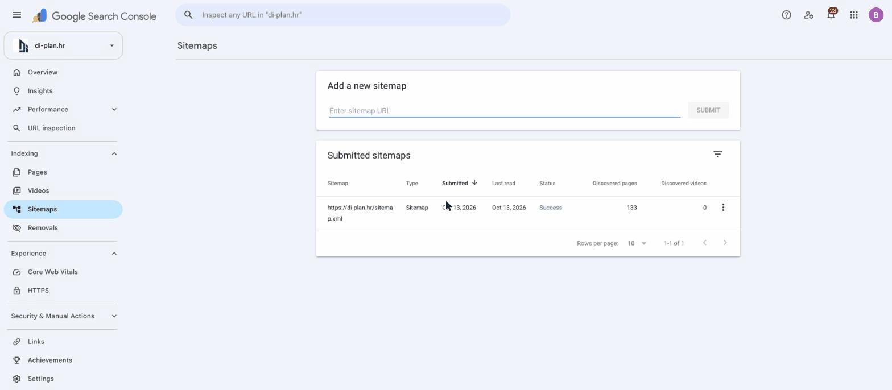
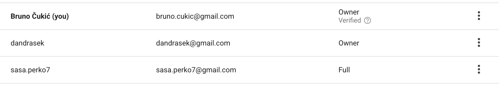
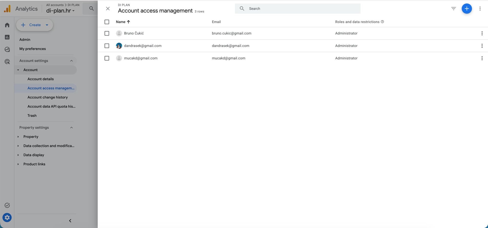
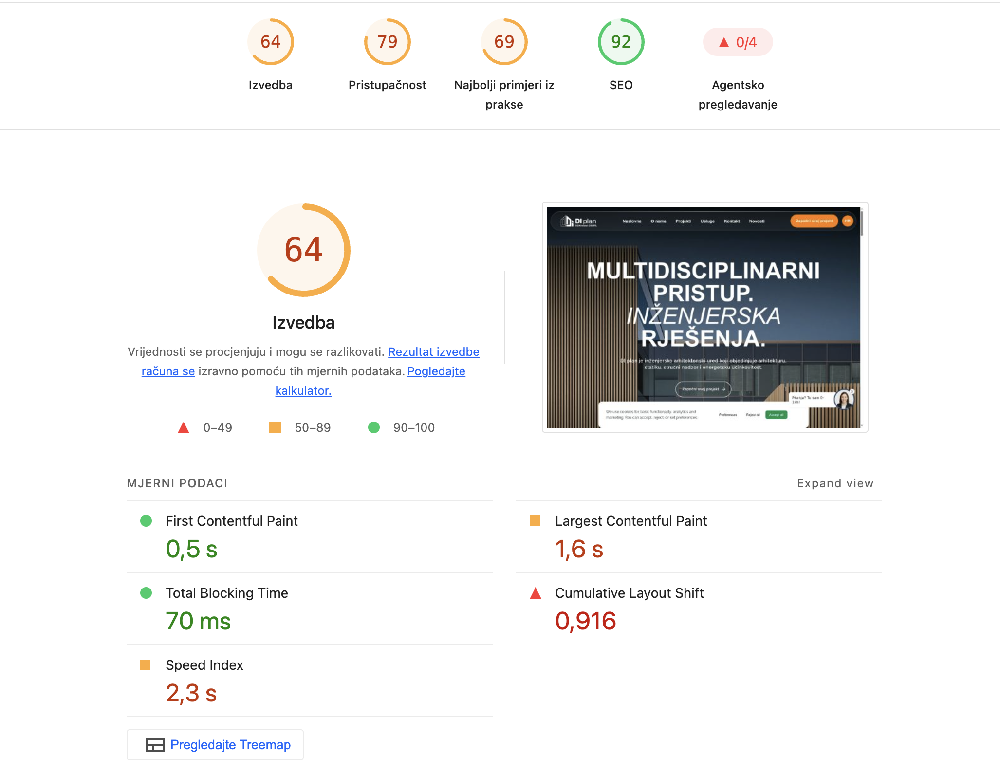
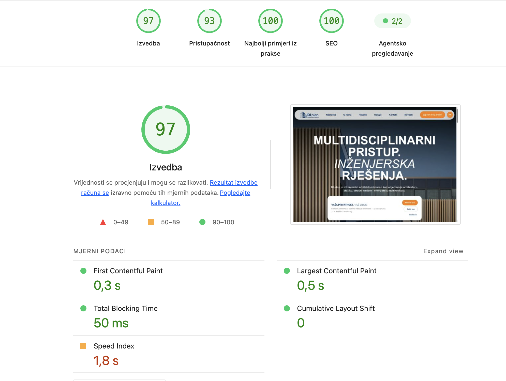
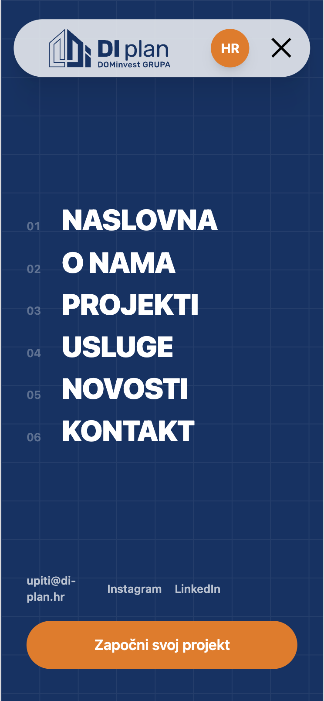

Odgovor na „Zahtjev za ispravak web stranice di-plan.hr" od 12. 10. 2026. — stavke T1–T8
| Naručitelj | DI plan d.o.o., Zagrebačka cesta 143A, 10000 Zagreb |
| Izvođač | Bruno Čukić, Ninefold.eu |
| Datum | 14. 10. 2026. |
| Status | Svi tehnički zahtjevi (T1–T8) riješeni i pušteni u produkciju 13. 10. 2026. |
Stranica je u cijelosti prebačena s klijentske (JavaScript) arhitekture na server-side rendering: svaka adresa sada već u prvom odgovoru poslužitelja vraća svoj puni sadržaj, naslove, poveznice i metapodatke. Sustav za uređivanje sadržaja (CMS) ostao je isti — sve što unesete ili izmijenite u CMS-u vidljivo je u izvornom kodu stranice u roku od nekoliko sekundi, bez ikakve dodatne akcije.
Uz to su optimizirane slike i video, postavljeni ispravni statusni kodovi i preusmjeravanja, automatiziran sitemap te poslan i potvrđen u Google Search Consoleu.
| Br. | Problem | Status |
|---|---|---|
| T1 | Google ne vidi sadržaj stranica | ✓ Riješeno |
| T2 | Naslovi stranica, opisi i oznaka jezika | ✓ Riješeno |
| T3 | Struktura naslova (H1, H2, H3) | ✓ Riješeno |
| T4 | Greška 404 za stranice koje ne postoje | ✓ Riješeno |
| T5 | Više adresa za istu stranicu i preusmjeravanja | ✓ Riješeno* |
| T6 | Sitemap.xml i robots.txt | ✓ Riješeno |
| T7 | Veličina slika i brzina stranice | ✓ Riješeno |
| T8 | Google Search Console i Analytics — pristup | ✓ Riješeno |
* preusmjeravanja sa starih domena di-arhitekti.hr i di-statik.hr zahtijevaju akciju na Vašoj strani — vidi poglavlje 6.
Uveden je server-side rendering za sve javne stranice (naslovnica, O nama, usluge i detalji usluga, projekti i detalji projekata, novosti i članci, kontakt). Svaka adresa u prvom odgovoru poslužitelja sadrži svoj tekst, naslove, poveznice i slike.
Kako provjeriti
Otvorite bilo koju stranicu → desni klik → „View Page Source": vidljiv je kompletan sadržaj. Naslovnica sada vraća ~250 KB sadržaja (prije: 7,9 KB praznog dokumenta). Alat „Provjera URL-a" u Search Consoleu prikazuje puni sadržaj.
Svaka javna stranica ima vlastiti naslov (title), opis (meta description), canonical adresu i Open Graph oznake (naslov, opis, slika) — svi u izvornom kodu stranice. Podaci se uređuju u CMS-u (postojeća SEO polja na svakoj vrsti sadržaja); izmjena u CMS-u vidljiva je u izvornom kodu u roku od nekoliko sekundi. Hrvatska verzija označena je s lang="hr", a engleska (/en) i njemačka (/de) verzija imaju vlastite adrese i hreflang oznake.
Kako provjeriti
Promijenite „Meta title" bilo koje stranice u CMS-u, spremite i objavite → osvježite stranicu i pogledajte izvorni kod.
Svaka stranica ima točno jedan H1 s glavnom temom. Naslovi blog kartica na naslovnici više nisu H1 (sada H3), a podnaslovi unutar članaka označeni su kao H2/H3.
Nepostojeće adrese (npr. /nepostojeca-stranica-xyz-123, kao i nepostojeći projekti/članci/usluge) vraćaju status 404 i prikazuju stranicu s porukom i poveznicom na naslovnicu.
Glavna adresa je https://di-plan.hr (bez www, bez kose crte na kraju). Sve varijante trajno preusmjeravaju na glavnu adresu. Popis preusmjeravanja u poglavlju 5.
Sitemap se izrađuje automatski iz CMS-a (sve javne stranice na sva tri jezika, bez duplikata), dostupan je sa statusom 200 i sam se ažurira pri svakoj izmjeni sadržaja. Robots.txt usklađen. Sitemap je poslan u Search Console i uspješno obrađen — Google je otkrio 133 stranice.

Slike su komprimirane (najveće tri: 12,8 MB → 0,4 MB), poslužuju se u modernim formatima (AVIF/WebP) u veličini prilagođenoj uređaju, a slike ispod prvog ekrana učitavaju se lijeno (lazy loading). Video (16 MB) više se ne preuzima automatski — pokreće se na klik. PageSpeed rezultati prije/poslije u poglavlju 4.
Domena di-plan.hr dodana je i potvrđena u Search Consoleu (vrsta „Domena"). Sitemap je poslan i obrađen. Pristupi po alatima:


| Mjera (mobilno) | Prije | Poslije |
|---|---|---|
| Ocjena izvedbe | 61 | 93 |
| Largest Contentful Paint | 21,4 s | 1,7 s |
| First Contentful Paint | 4,9 s | 1,1 s |
| SEO ocjena | 92 | 100 |
| Mjera (računalo) | Prije | Poslije |
|---|---|---|
| Ocjena izvedbe | 64 | 97 |
| Largest Contentful Paint | 1,6 s | 0,5 s |
| Cumulative Layout Shift (stabilnost) | 0,916 | 0 |
| Pristupačnost | 79 | 93 |
| Najbolji primjeri iz prakse | 69 | 100 |
| SEO ocjena | 92 | 100 |


| Stara adresa | Nova adresa |
|---|---|
| http://di-plan.hr/* (bez SSL-a) | https://di-plan.hr/* |
| https://www.di-plan.hr/* | https://di-plan.hr/* |
| https://di-plan.hr/*/ (kosa crta na kraju) | https://di-plan.hr/* |
| /about | /about-us |
| /services | /service |
| /projects | /project |
| /blog i /blog/[članak] | /news i /news/[članak] |
diarhitekti.chatnav.net koja više ne postoji, što uzrokuje greške u pregledniku i blago usporava stranicu. Molimo kontaktirajte Chatnav da ažuriraju konfiguraciju na novu domenu.
llms.txt datoteka — strojno čitljiv opis stranice za AI tražilice i agente, generira se automatski iz CMS-a.